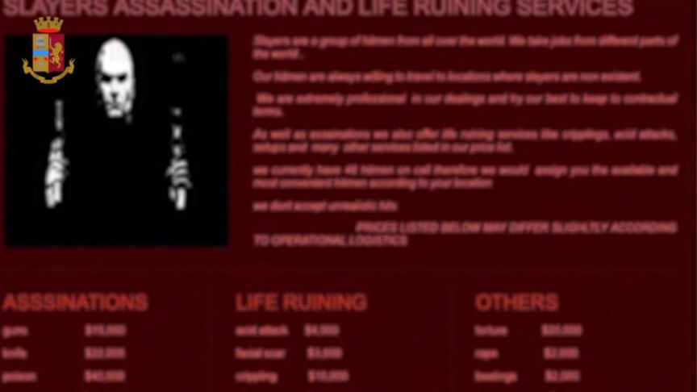
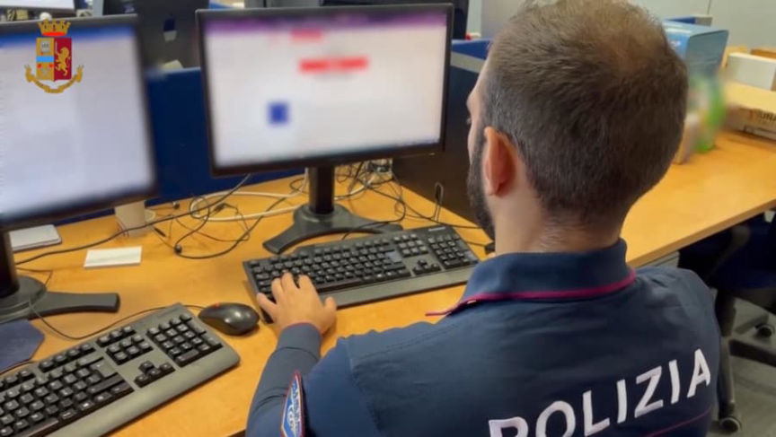
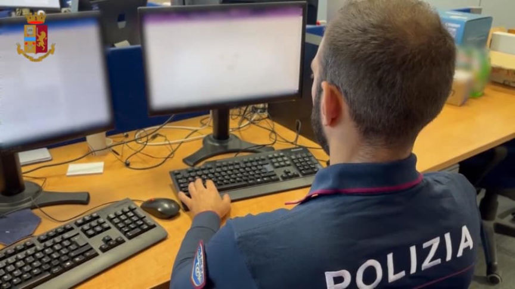
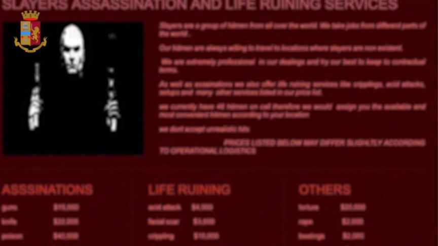
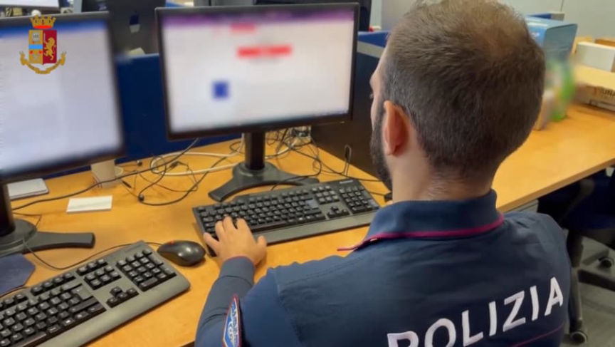
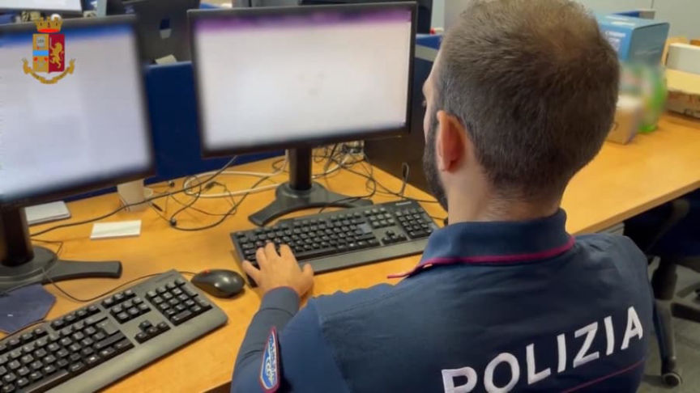

Italian Man Allegedly Hired a Hitman on the Darkweb
~2 min read | Published on 2022-07-15, tagged Murder-for-Hire, Sentenced using 281 words.
According to Italian law enforcement, a man from the Province of Treviso attempted to hire a hitman on the darkweb to kill his romantic rival.

The Federal Bureau of Investigation in the United States notified law enforcement agencies in Italy that someone had targeted a 45-year-old man from Conegliano through a murder-for-hire site on the darkweb. Local authorities discretely alerted the intended victim of the hit.
By tracing the payment, investigators with the Postal and Communications Police identified the person responsible for paying for the hit. They “tracked the movemenent of cryptocurrencies from the virtual wallet of the suspect to the administrator of the site.” The investigation resulted in the identification of a 34-year-old man from the province of Treviso as the suspect.

The suspect allegedly wanted to “freely court” the intended victim’s girlfriend, with whom the suspect was “secretly in love.” By eliminating the competition, the suspect believed he would have a chance with the woman.

Police referred the information to prosecutors. According to the police, the case is an example of Italian law enforcement’s “modern investigative techniques.”
“The whole judicial affair is characterized by some novel aspects that deserve to be highlighted. The successful identification of a user operating on the darkweb testifies that the non-indexed part of the internet, where illicit goods and services are freely offered, hitherto considered impenetrable by the Police, is no longer so. Indeed, modern investigative techniques used by the Postal and Communications Police, particularly those for tracking cryptocurrency payments, make it possible, as in this case, to trace cryptocurrency wallet holders.”
[em]LA POLIZIA DI STATO IDENTIFICA IL MANDANTE DI UN OMICIDIO SUL DARKWEB[/em] | archive.is, archive.org, commissariatodips.it

This image was part of the police's media release
The Federal Bureau of Investigation in the United States notified law enforcement agencies in Italy that someone had targeted a 45-year-old man from Conegliano through a murder-for-hire site on the darkweb. Local authorities discretely alerted the intended victim of the hit.
By tracing the payment, investigators with the Postal and Communications Police identified the person responsible for paying for the hit. They “tracked the movemenent of cryptocurrencies from the virtual wallet of the suspect to the administrator of the site.” The investigation resulted in the identification of a 34-year-old man from the province of Treviso as the suspect.

What is the blurred website?
The suspect allegedly wanted to “freely court” the intended victim’s girlfriend, with whom the suspect was “secretly in love.” By eliminating the competition, the suspect believed he would have a chance with the woman.

Dread?
Police referred the information to prosecutors. According to the police, the case is an example of Italian law enforcement’s “modern investigative techniques.”
“The whole judicial affair is characterized by some novel aspects that deserve to be highlighted. The successful identification of a user operating on the darkweb testifies that the non-indexed part of the internet, where illicit goods and services are freely offered, hitherto considered impenetrable by the Police, is no longer so. Indeed, modern investigative techniques used by the Postal and Communications Police, particularly those for tracking cryptocurrency payments, make it possible, as in this case, to trace cryptocurrency wallet holders.”
[em]LA POLIZIA DI STATO IDENTIFICA IL MANDANTE DI UN OMICIDIO SUL DARKWEB[/em] | archive.is, archive.org, commissariatodips.it